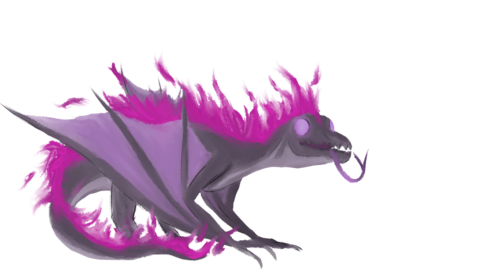
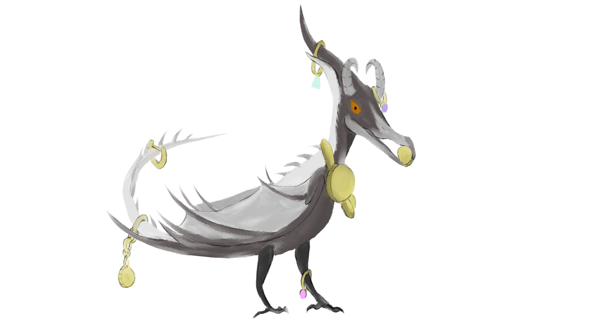
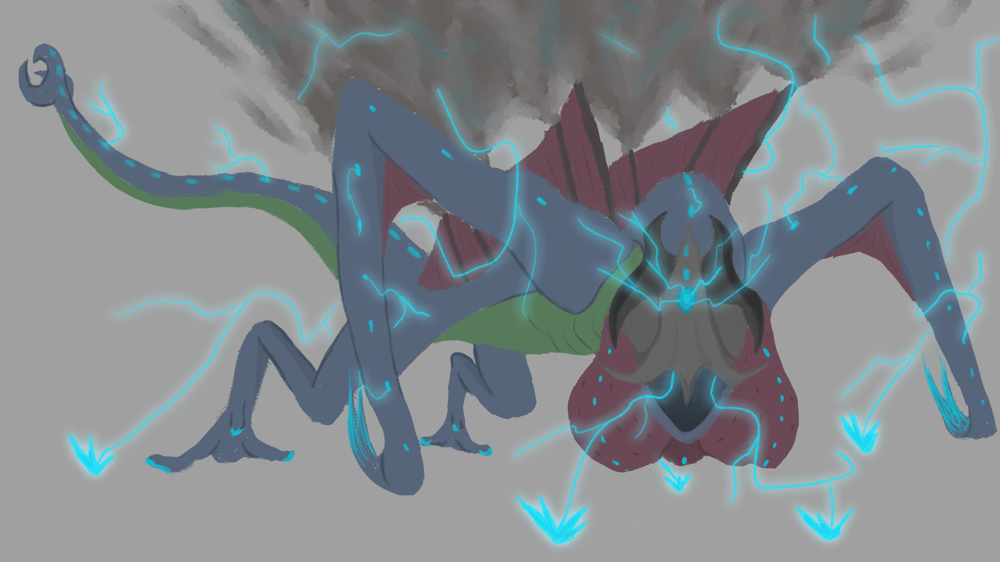
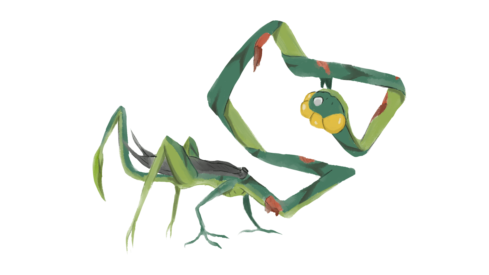

Fire
This dragon was the first of the prompts and I knew what I wanted to do instantly. I gave it purple ghostly flames and a face to match.

Golden
This dragon I tried my hand at giving a little personality. I didn't want to go with a generic "golden" scaled dragon like everyone else. Instead I went with a small bird-like dragon that stole bits and baubles, simialr to how crows are in real life.

Kaiju
I wanted to give this dragon the feeling of being massive without drawing any background so I angled the view to be facing upawards at it. There are definitely some pacific rim inspirations for this dragon and I am really proud of the "presence" I was able to give this one.

Nautical
For this dragon I tried to consider it's function in a fantasy world plagued by dragons, something that would threaten every ship that sailed the open seas. So I thought of a dragon where its chin would resemble a hull breaker, ramming itself into ships and watching them helplessly sink into the sea.

Gothic
I was very self indulgent with this dragon and it was by far my favorite dragon for this drawing challenge. I wanted a dragon that looked like it couldnt fly but didn't really need to, as it stalked its prey at night. I took a lot of vampire and wendigo imagery with this one.

Plague
For this one I wanted to make a dragon that looked like its mind and body wasn't its own. I was heavily inspired by the clickers from the last of us for this one. Something about a brainwashing fungus is really cool to me.